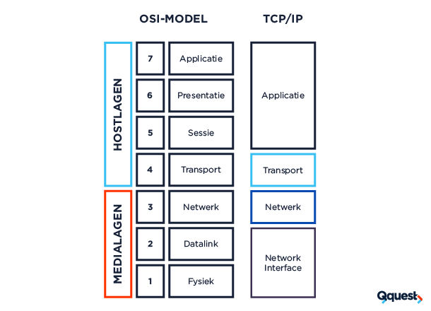

-
Dropdown
De logischelaag
De logische laag van een computer is als een soort tussenpersoon tussen de harde computeronderdelen
en de programma's die we gebruiken. Het helpt deze programma's met dingen zoals het doorsturen van
informatie en zorgen dat alles soepel werkt. Het maakt het makkelijker voor programma's om te praten
met de computer, zonder dat ze zich druk hoeven te maken over hoe de computer precies werkt. Dus,
de logische laag maakt het leven van programma's makkelijker
